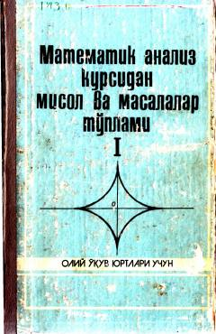

MAMatematik analiz kursidan misol va masalalar to'plami.
Ushbu o'quv qo'llanma oliy o'quv yurtlari talabalari uchun mo'ljallangan bo'lib, matematik analiz kursining dastlabki tushunchalari, limitlar, hosila va integrallar mavzulari bo'yicha nazariy tushunchalar va yechimli misollarni o'z ichiga oladi. Kitobda ko'plab misol va masalalar batafsil yechib ko'rsatilgan hamda mustaqil yechish uchun topshiriqlar berilgan.